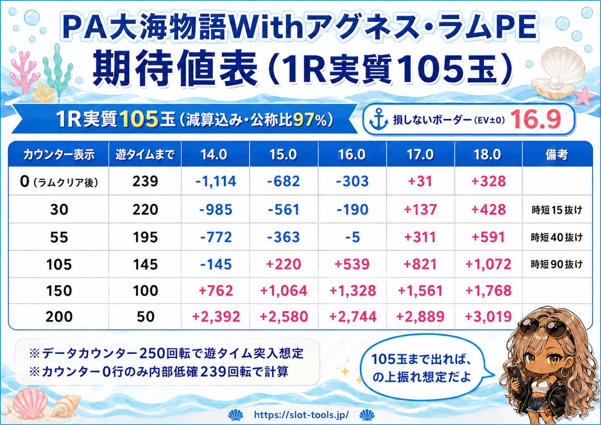
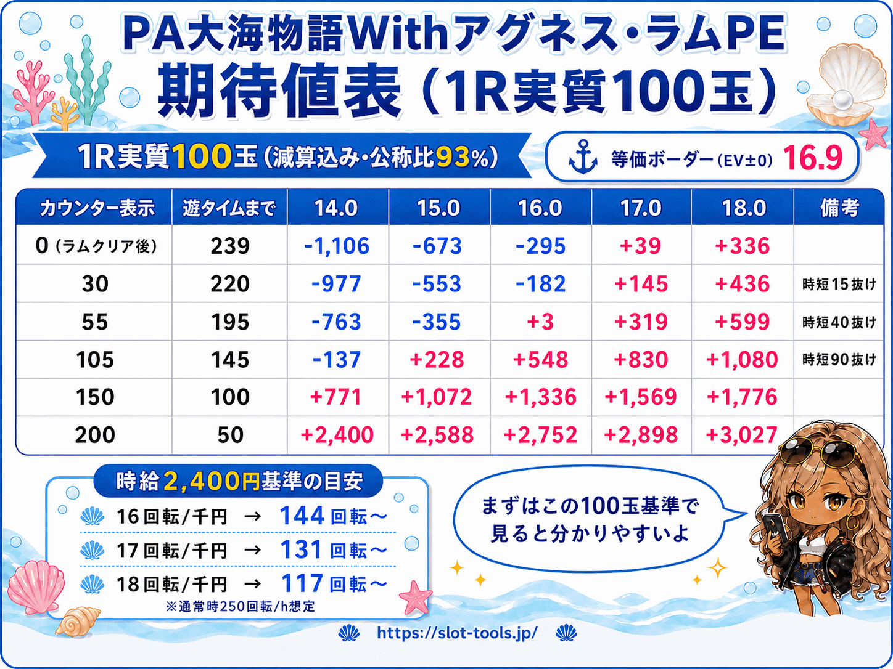
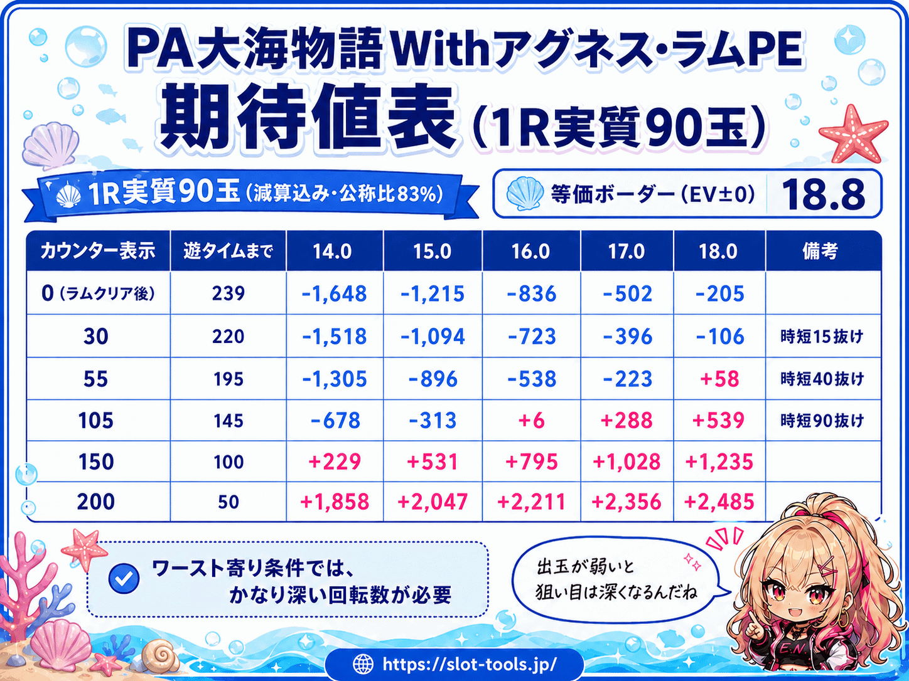

9月7日にアグネスラムの新台が入ります。この記事を開いた人が知りたいのは、たぶん「何回転から打てるのか」という1つの数字だと思います。
先に言っておくと、その1つの数字は、今の時点では誰にも断定できません。理由は単純で、ボーダーは台のスペックだけでは決まらないからです。実質出玉と回転率で動きます。
昔からボーダーが「1つの数字」で語られてきたのは、昔の攻略誌の影響が大きいと思っています。本来は出玉ごと・回転率ごとに細かく分けるべき数字なんですが、紙面でそれを全部載せるのは無理があった。今はラウンド別出玉ごとのボーダー一覧くらいはネットにあります。ただ、それは表があるだけで、「じゃあ遊タイム狙いはどこから打てるのか」までは繋がっていない。大事な情報が点々と散らばっていて、まとまっていない。分かりにくさの正体はこれだと思っています。
この記事では、それを全部繋げます。
スペックの復習
過去のアグネスラム系を打ってきた人なら、大枠は同じです。復習として見てください。
- 大当り確率：低確1/99.9・高確1/19.5
- ST100%突入・10回転
- 時短：90回 or 40回 or 15回（4%／66%／30%）
- 遊タイム：低確239回転消化で時短10,000回（＝当たるまで回る）
- 出玉：1080／648／432個（公称）
ST100%と聞くと連チャン機に見えますが、その分1回ごとの継続率は落ちる作りです。計算すると継続率は57.7%、平均2.37連、初当り1回の期待出玉は公称ベースで約1,390玉。連チャンで伸ばす台ではありません。
この台の軸は連チャンではなく、遊タイム到達＝当り確定という構造です。時短10,000回は事実上「当たるまで回る」ので、天井に届けば当りは確定。だから期待値の計算は「当り1回の価値」から「天井までの投資」を引くだけの、ほぼ引き算になります。難しい理屈が要らない台です。
そしてもう1つ、今作で一番変わったのはここだと思っています。天井が浅くなったことで、打てるラインがだいぶ下がった。軽くハマっている段階から狙える台になりました。
期待値表（データカウンター基準）
表を出す前に、前提を3つ。
- データカウンター250回転で遊タイム突入として扱います。過去のアグネスラム系の傾向から、ST10回転はカウンターに算入されないと見ています。導入前の断定なので、万一ズレていたら導入後すぐ修正を出します
- 表はデータカウンター250到達を実戦目安にしています。ただしラムクリア後0回転だけは、内部スペック上の低確239回転を使って期待値を計算しています
- 出玉は「1Rあたりの実質玉数」で3段階に分けました。公称は108玉/Rですが、実際はアタッカーのこぼれで削られます。105玉なら上振れ、100玉が現実的な限度、90玉は低いがありえる最低限、というイメージです。この玉数は電サポ中の減りも込みの値で、ツールが実測する「1R平均」と同じ定義です
条件は等価（4円・25玉）。カウンター30と55の行は、時短15抜け・時短40抜けの直後（残保留5個消化後）を想定した実戦起点です。
1R実質105玉（減算込み・公称比97%） 損しないボーダー（EV±0） 16.9
| カウンター表示 | 遊タイムまで | 14.0 | 15.0 | 16.0 | 17.0 | 18.0 | 備考 |
|---|---|---|---|---|---|---|---|
| 0（ラムクリア後） | 239 | −1,114 | −682 | −303 | +31 | +328 | |
| 30 | 220 | −985 | −561 | −190 | +137 | +428 | 時短15抜け |
| 55 | 195 | −772 | −363 | −5 | +311 | +591 | 時短40抜け |
| 105 | 145 | −145 | +220 | +539 | +821 | +1,072 | 時短90抜け |
| 150 | 100 | +762 | +1,064 | +1,328 | +1,561 | +1,768 | |
| 200 | 50 | +2,392 | +2,580 | +2,744 | +2,889 | +3,019 |

1R実質100玉（減算込み・公称比93%） 損しないボーダー（EV±0） 17.8
| カウンター表示 | 遊タイムまで | 14.0 | 15.0 | 16.0 | 17.0 | 18.0 | 備考 |
|---|---|---|---|---|---|---|---|
| 0（ラムクリア後） | 239 | −1,372 | −939 | −560 | −226 | +71 | |
| 30 | 220 | −1,242 | −818 | −448 | −121 | +170 | 時短15抜け |
| 55 | 195 | −1,029 | −620 | −262 | +53 | +334 | 時短40抜け |
| 105 | 145 | −403 | −37 | +282 | +564 | +814 | 時短90抜け |
| 150 | 100 | +505 | +807 | +1,071 | +1,304 | +1,511 | |
| 200 | 50 | +2,134 | +2,322 | +2,487 | +2,632 | +2,761 |

1R実質90玉（減算込み・公称比83%） 損しないボーダー（EV±0） 19.7
| カウンター表示 | 遊タイムまで | 14.0 | 15.0 | 16.0 | 17.0 | 18.0 | 備考 |
|---|---|---|---|---|---|---|---|
| 0（ラムクリア後） | 239 | −1,887 | −1,454 | −1,075 | −741 | −444 | |
| 30 | 220 | −1,757 | −1,333 | −963 | −635 | −345 | 時短15抜け |
| 55 | 195 | −1,544 | −1,135 | −777 | −462 | −181 | 時短40抜け |
| 105 | 145 | −917 | −552 | −233 | +49 | +300 | 時短90抜け |
| 150 | 100 | −10 | +292 | +556 | +789 | +996 | |
| 200 | 50 | +1,619 | +1,807 | +1,972 | +2,117 | +2,246 |

表を見て分かる通り、損しないボーダーだけでも1R実測玉数で16.9から19.7まで3回転近く動きます。「ボーダー◯回転」という1点の数字がいかに条件次第か、この幅がそのまま答えです。
ついでに言うと、この台に「全ツッパ」という概念は適用できません。スロの機械割105%（時給約2,400円・日当換算で約3万円）を捨てても釣り合う水準で計算すると、ラムクリア後0回転から打ち切るには25回転前後の釘が必要になります。そんな釘は存在しないので、この台は0から張り付く台ではなく、カウンターが進んだ台を拾う台です。勝負は全部「何回転の台を、どの回転率で拾うか」に集約されます。
どこから「打てる」のか
期待値がプラスなら打てる、とは言いません。基準を2本に分けます。
①損しないライン（期待値プラス）
一番厳しい条件（回転率14・1R90玉）で見ても、カウンター151以上ならプラスです。ここを切っている台は、回転率を確かめる前でもまず候補に入れていい下限になります。
②打つ価値ライン（時給2,400円）
パチスロで「打てる」の目安は機械割105%、時給でいうと2,400円くらいです。遊タイムも同じ物差しで測ると、スロとどっちに座るべきかが直接比較できます。
| 1R実質 | 14.0 | 15.0 | 16.0 | 17.0 | 18.0 |
|---|---|---|---|---|---|
| 105玉 | 165〜 | 155〜 | 144〜 | 132〜 | 118〜 |
| 100玉 | 173〜 | 164〜 | 155〜 | 145〜 | 134〜 |
| 90玉 | 187〜 | 180〜 | 174〜 | 166〜 | 159〜 |
（数字＝時給2,400円を超えるカウンター表示。例：1R100玉・17回転ならカウンター145以上）
ただしこの②は「打つ資格」の線引きではありません。スロの代替がある時の比較用の物差しです。私自身は「期待値1,000円取れれば打つ」という自分ルールでやってきて、それで普通に収支は付いてきました。遊タイム狙いは拘束が短いので、小さい期待値でも数を積めば勝てます。105%のスロが転がっていない時間なら、時給1,500円の遊タイムを打つのが正解です。
時給の前提は通常時250回転/hの仮定です。実際は回転率が低い台ほど保留が切れて時速も落ちますが、時給への影響は小さいので固定値にしています。省略している部分は省略していると書く主義なので、気になる人はツール側で自分の体感時速に変えてください。
細かい話を2つ。予測した回転率は必ずブレるので、17と読んだら16.5と17.5でも表を見てください。ブレてもプラスの側にいるかで判断する方が実戦的です。それと、自分で時短を抜けた直後の続行判断は、残保留5個ぶんの打ち出しが浮くので表より300円ほど甘くなります。もう1つ、遊タイム中の玉減りは−0.8玉/回転で計算していますが、この値は止め打ち次第で人によって大きく変わります。止め打ちをする人は0に近づくので、その分この表より甘く見て構いません。
立ち回りと環境の読み
数字の外の話を2つ。
電サポ100を外した台は狙い目になり得ます。 時短90抜け＋残保留でカウンター105あたりから始まる台は、表の通り回転率次第でもうプラス圏です。前作までの感覚だと「まだ全然浅い」に見える位置なので、ここが拾えるかどうかは導入初期の注目ポイントです。
導入初期の環境観察。 天井が浅くなった分、すぐ狩られて空き台が消えるのか、それともアグネス5までの感覚の人が多くて浅い台が案外残るのか。私は導入段階でここを見ます。結果はツールの記録がそのまま答えを出してくれるはずです。
店選びは、まず地域の1番店・2番店から見るのがいいと思っています。今のホールは予算がスロットに寄っているので、パチンコに予算を割けるのは体力のある店に絞られやすい。これは地域差のある個人的な見解ですが、自分の地域ではそうなっています。

ここから先は「測る」話
この記事の数字には、導入前だから確定できないものが4つ残っています。
- カウンター250で本当に遊タイムに入るか
- 1R実質玉数の平均
- 電サポ中の玉減り
- 通常時の時速
これを全部、導入日から実測で埋めていきます。使うのは遊タイム実戦ツールです。台ごとに回転率が貯まり、当選のたびに1R平均出玉が貯まります。時速も、打った記録から出せるようにしていきます。閉店際にどこまで打てるかという判断も、固定の仮定値ではなく自分の実測をもとにする形へ進めていきます。
有料で買った期待値表は、買った瞬間から古くなっていきます。周りにも浸透していきます。測る道具は逆で、使うほど自分の店の実測に置き換わって正確になっていきます。この記事の表は出発点で、完成させるのはあなたの記録です。
ツールは無料です。→遊タイム実戦ツールを開く
計算の前提と手順はすべて公開しています。誤りがあれば指摘してください。転記は引用元とこのURLの明記を条件に自由です。